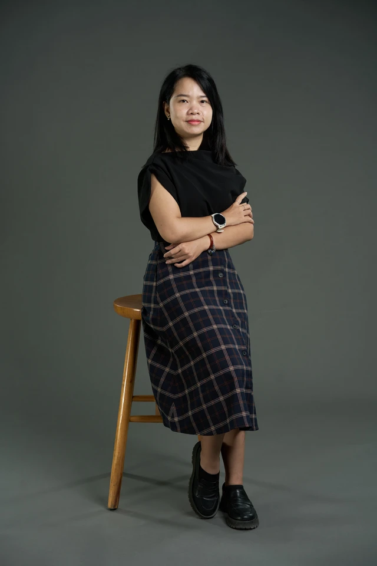

TOD Planning
01Transit node density, mixed-use zoning, HCMC corridor analysis, and GIS-based urban structure modelling.
LAB · 02 / SML
A research platform for Mobility-as-a-Service, intelligent traffic operation, and last-mile micro-mobility. We design, prototype, and evaluate digital-physical mobility systems that make Vietnamese cities safer, cleaner, and more inclusive — starting on campus and scaling to the region.
Smart Mobility Lab advances intelligent transportation systems and sustainable urban mobility through three integrated research tracks: TOD-driven urban structure research, smart mobility & traffic operations management, and last-mile micro-mobility systems. Through the Campus EV Micro-Mobility (CE-M) Program, solutions are tested in real-world conditions and scaled across Vietnamese cities.

TOD · INTERACTIVE SIMULATION
An interactive simulation of how smart mobility layers — TOD zoning, traffic signals, EV micro-mobility, and real-time data — integrate around a transit hub. Click elements to explore.
01 · RESEARCH THEMES
SML is organised around three interlocking streams — together they connect travellers, vehicles, and infrastructure into a single learning system.
Designing Mobility-as-a-Service architectures that unify routing, ticketing, and transfer experiences across bus, rail, and micro-mobility — with a strong emphasis on transparent data and user trust.
Building data-driven tools for traffic operators — from adaptive signal control in mixed two-wheeler traffic to AI-based demand forecasting and corridor-scale route optimisation.
Closing the first-and-last-mile gap with shared e-motorbikes, e-shuttles, and walkable infrastructure — safely and efficiently, especially for students and women.
02 · FLAGSHIP PROGRAM
CE-M is SML's flagship living-lab: a campus-scale electric micro-mobility system that combines e-motorbikes and e-shuttle buses inside a geofenced UEH network. It is the place where our research meets real students, real streets, and real operators — and where smart platforms, private-sector partnerships, and campus-first policy come together.
The program is structured as a three-pillar architecture, each pillar jointly owned by researchers, operators, and the university — so that technical choices, commercial viability, and policy legitimacy move in lock-step.
03 · INTERACTIVE DEMO
Click any two points on the campus map to plan a multi-modal trip. The planner picks the nearest e-shuttle stop or e-motorbike, then assembles a walk → ride → walk route. Switch the mode to compare time, emissions, and cost.
04 · ROADMAP
A staged rollout from foundational platform to regional positioning.
Stand up the CE-M pilot: first e-shuttle route, booking and payment MVP, baseline OD surveys, and the first adaptive-signal experiments on a single UEH corridor.
Integrate e-motorbike sharing, extend the geofenced network across UEH campuses, and wire up operator partners. Launch the MaaS Route Planner as a public tool and publish first impact papers.
Position SML as a regional reference on campus-scale low-carbon mobility: transfer the CE-M playbook to partner universities and municipal districts across Southeast Asia.
05 · PROJECTS
Ongoing and recent work underpinning SML's programmatic agenda.
A multi-country program building a shared evidence base and curriculum on gender-responsive transport planning, co-designed with practitioners in Ho Chi Minh City and partner cities.
Comparative acceptance and behaviour study of ADAS technologies in Vietnam and Belgium — driver trust, use patterns, and policy implications for mixed-traffic emerging markets.
An intersectional framework for walkability audits — combining street audits, interviews, and equity metrics to guide low-carbon street transitions in Southeast Asian cities.
06 · FACILITIES
SML pairs an immersive simulation suite with a field-grade sensing stack — so ideas can move from virtual prototype to instrumented pilot without leaving the lab.
A mixed-reality environment for traffic scenario testing, driver behaviour experiments, and participatory co-design of street futures.
Field-deployable sensing stack and calibration bench for mixed-traffic studies — from two-wheeler safety to intersection-level flow analysis.
07 · METRICS
Targets tracked across the 2027 / 2029 / 2030 milestones.
08 · PUBLICATIONS
Selected peer-reviewed outputs and policy reports.
GTALK Report Series: Safer Cities in Asia — Ho Chi Minh City, Vietnam.
Gender and Transport Assemblage of Learning and Knowledge, Report Series.
Public Transport Policy through a Gender Lens in the Post-Pandemic World.
Journal of the Eastern Asia Society for Transportation Studies, 15, 659–675.
Acceptance towards Advanced Driver Assistance Systems (ADAS).
Transportation Research Part F, 105, 284–305.
A Comparative Study of Factors Influencing ADAS Acceptance in Belgium and Vietnam.
Safety, 10(4), 93.
09 · STAKEHOLDERS
Who SML works with — and what each of them gains.